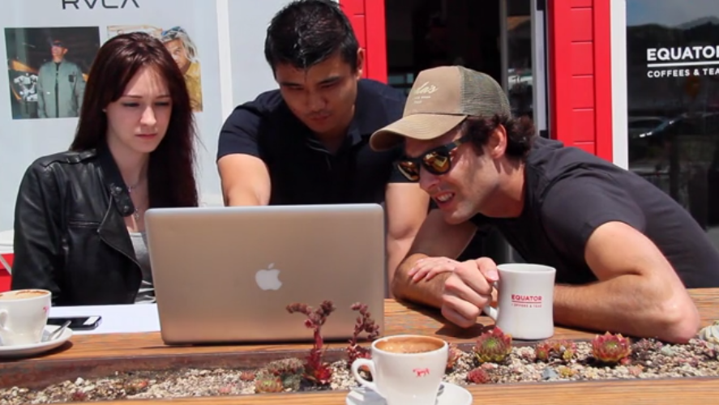

The Four Seasons runs over 92 different hotels and resorts worldwide. They’ve noticed companies like Priceline, Kayak, and others capitalizing on discounted rates for rooms— including from their own establishments! They’d like to create their own mobile app to compete with these 3rd party apps and to keep their hotel chains under the same digital experience. They also want to speak more clearly to their different customers, especially those looking for a vacation spot.
To create a one stop mobile app that engages new and existing customers by allowing them to look for Four Seasons vacation destinations and book a vacation while guaranteeing a consistent brand experience.
Tools Used: Keynote, Omnigraffle, Flinto, PopApp, Photoshop
We started with preliminary research to fully understand The Four Seasons brand identity, their story, and reasons their customers choose The Four Seasons. We started by visiting the Four Seasons location in San Francisco and interviewing guests and employees about their reasons for choosing Four Seasons and what made their experience unique.
We discerned four essential elements of the Four Seasons brand:
“Times change, but our dedication to perfecting the travel experience never will."
We began with a comprehensive feature analysis of competing travel applications to. Many elements in our final prototype were inspired by existing apps. We brought together different styles to create distinctive design that reflects the Four Seasons brand and experience.
We also performed a heuristic evaluation of competitors’ applications to understand the design standards with which we should approach the design of the Four Seasons app. We found that clean, flat design was a common trend, but competitors did not include sufficient visuals in their applications. Users booking hotels would prefer to use images to quickly evaluate their options.
We formed personas based on our customer interviews and competitive analysis, and crafted user scenarios when deciding on the essential features of our app.
Our first sketches of the Four Seasons app integrated our personas and competitive analysis, and were designed with the idea of a “mobile concierge” in mind. This version would enable destination discovery and booking, but also take care of other travel-related needs like discovering nearby attractions.
We imported the sketches to PopApp to build a working prototype for preliminary user testing, and quickly found that the “concierge” functionality was much less important to users than the core functionality of destination discovery and booking.
With this feedback in mind, we designed our digital prototypes to focus on destination discovery and hotel booking, with an emphasis on usability and core features. The landing screen solves the user pain point of wanting to easily browse and book travel destinations based on the desired travel group, season, and purpose of travel.
Typically, a UX design team might not take the additional step of creating visuals for an early prototype, but we needed to express the visual cues that would inform user actions (e.g. the fact that the highlighted fields on the landing screen can be changed when tapped).